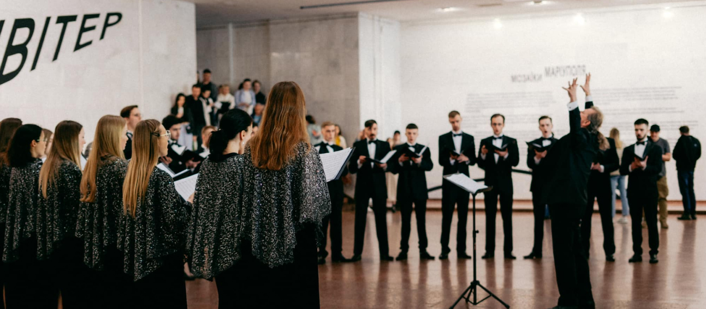

Фестиваль Борифест
1 травня 2024 р.

Фестиваль Борифест. Натхненні Аллою Горською відбувся в останні п’ять днів роботи. Виставка «Алла Горська. Боривітер» — і став її урочистою кодою. Впродовж фестивального дійства відбулося півтора десятка заходів: тематичні екскурсії, публічні інтерв’ю, вистави, концерти, перформанси, майстер-клас — їх відвідали тисячі гостей.
Ми вдячні всім митцям, які долучилися до «Борифесту» й додали до виставки власні інсайти: акторам DakhTrio та ГОГОЛЬFEST, режисерці Кристина ...